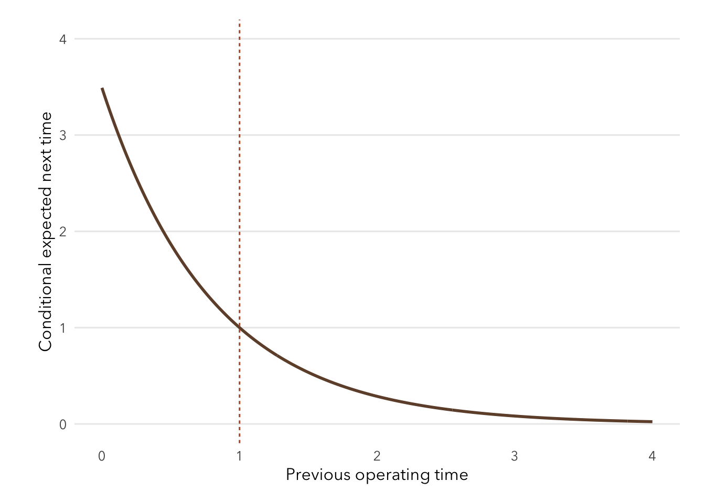
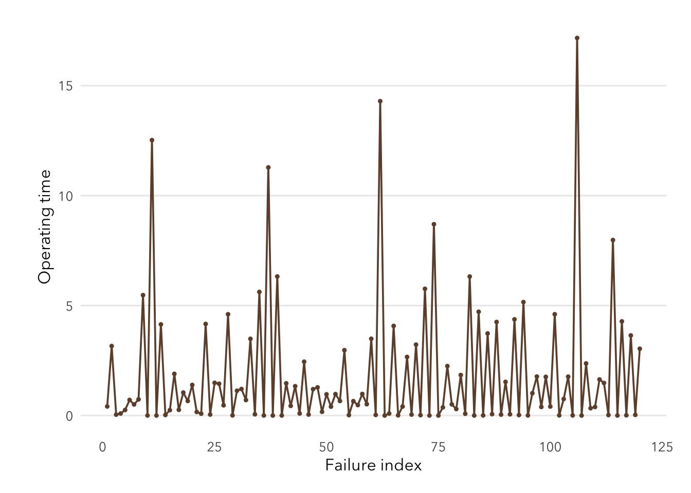
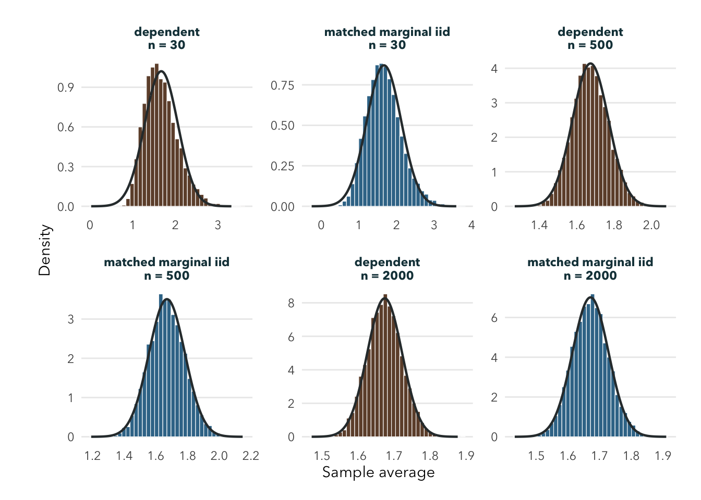
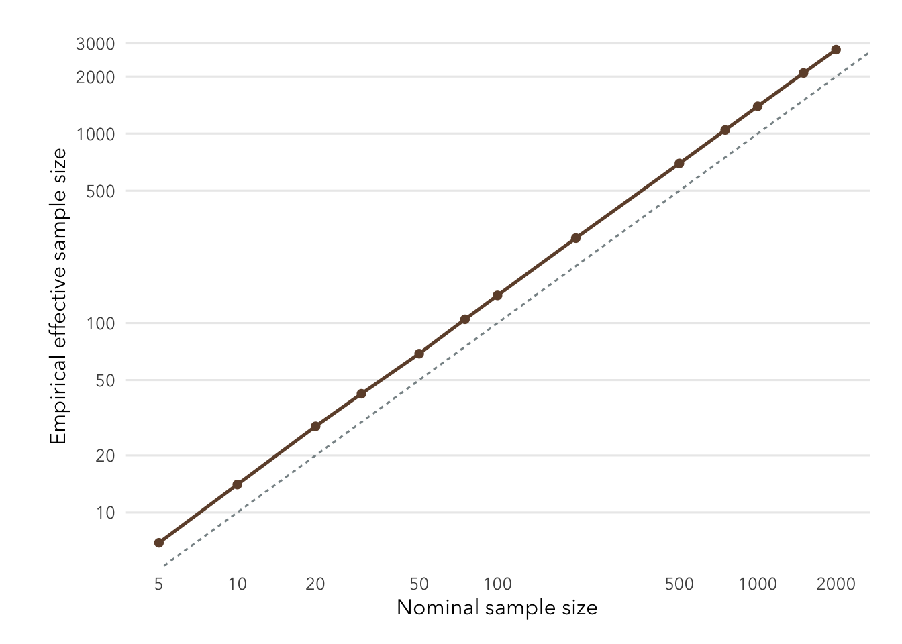

Show R code
plot_dependent_rate_curve()
What changes when each operating time affects the next failure rate? This process removes independence while retaining a simple conditional Exponential model. It tests an assumption of the ordinary CLT rather than merely changing the parent shape.
The instructor model is
\[ \lambda_t=\exp\{1.25(X_{t-1}-1)\}. \]
\[ X_t\mid X_{t-1}\sim \operatorname{Exponential}(\lambda_t). \]
A long previous operating time raises the next rate and shortens the conditional expected time. A short previous time does the reverse.
I expected alternating negative dependence: unusually long times should tend to be followed by shorter ones. That dependence may reduce the variance of an average, but it does not guarantee a rapidly Normal shape because the conditional Exponential draws remain right-skewed.
The marginal distribution has no closed form supplied by the course document. I therefore use a one-million-value reference chain after 10,000 burn-in steps to estimate its center and spread. Separately, 10,000 independent chains receive 500 burn-in steps before averages are retained through \(n=2000\).
The matched comparator resamples independently from the same estimated marginal distribution. This removes serial dependence while keeping marginal scale approximately fixed.

reference_table <- data.frame(
Quantity = c("Retained values", "Reference mean", "Reference SD", "Lag-1 autocorrelation"),
Value = c(
format(reference_outputs$summary$retained, big.mark = ","),
sprintf("%.4f", reference_outputs$summary$mean),
sprintf("%.4f", reference_outputs$summary$sd),
sprintf("%.4f", reference_outputs$summary$lag1_autocorrelation)
)
)
knitr::kable(reference_table, row.names = FALSE)| Quantity | Value |
|---|---|
| Retained values | 1,000,000 |
| Reference mean | 1.6712 |
| Reference SD | 2.5428 |
| Lag-1 autocorrelation | -0.3649 |
shown <- page_results[page_results$n %in% selected_n, c("variant", "n", "simulated_mean", "simulated_se", "skewness", "excess_kurtosis", "qq_rmse", "effective_n")]
names(shown) <- c("Process", "n", "Mean", "Empirical SE", "Skewness", "Excess kurtosis", "Q-Q RMSE", "Effective n")
knitr::kable(shown, digits = 4, row.names = FALSE)| Process | n | Mean | Empirical SE | Skewness | Excess kurtosis | Q-Q RMSE | Effective n |
|---|---|---|---|---|---|---|---|
| dependent | 30 | 1.6682 | 0.3908 | 0.6736 | 0.5513 | 0.1364 | 42.3372 |
| matched marginal iid | 30 | 1.6646 | 0.4583 | 0.4596 | 0.2254 | 0.0971 | 30.7892 |
| dependent | 500 | 1.6737 | 0.0964 | 0.1454 | -0.0443 | 0.0300 | 696.1537 |
| matched marginal iid | 500 | 1.6694 | 0.1138 | 0.1540 | 0.0013 | 0.0296 | 499.7173 |
| dependent | 2000 | 1.6740 | 0.0482 | 0.1032 | 0.0001 | 0.0213 | 2777.7365 |
| matched marginal iid | 2000 | 1.6714 | 0.0569 | 0.0820 | -0.0832 | 0.0234 | 1995.8247 |


shown_sensitivity <- sensitivity[sensitivity$n == 2000, c("burn_in", "simulated_mean", "simulated_se", "skewness", "qq_rmse", "effective_n")]
names(shown_sensitivity) <- c("Burn-in", "Mean", "Empirical SE", "Skewness", "Q-Q RMSE", "Effective n")
knitr::kable(shown_sensitivity, digits = 4, row.names = FALSE)| Burn-in | Mean | Empirical SE | Skewness | Q-Q RMSE | Effective n |
|---|---|---|---|---|---|
| 250 | 1.6751 | 0.0488 | 0.0853 | 0.0211 | 2714.105 |
| 500 | 1.6754 | 0.0487 | 0.1057 | 0.0228 | 2721.115 |
| 1000 | 1.6748 | 0.0488 | 0.0889 | 0.0208 | 2720.553 |
No calibration-band threshold appears through \(n=2000\). Shape improves steadily, and the histogram becomes visually close to Normal, but skewness is still about 0.103 and Q-Q RMSE is about 0.021. Both remain outside the Normal-noise guidance.
The precision result points in the opposite direction: effective sample size is about 2778 for nominal \(n=2000\). Dependence improves precision here while delaying a conservative shape conclusion.
This is one stylized Markov process, not a reliability model for a real machine. The marginal references are simulation estimates, and no general dependent-process theorem is proved here. A Normal-looking histogram would not restore the ordinary iid CLT assumptions.
Dependence changes more than standard error. In this compensating process it narrows averages, creates effective sample sizes above nominal \(n\), and still leaves detectable right-tail shape after 2,000 observations.